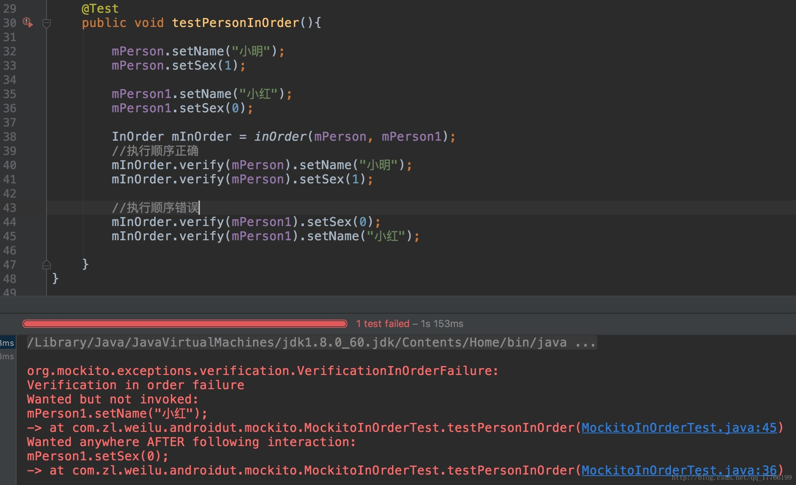
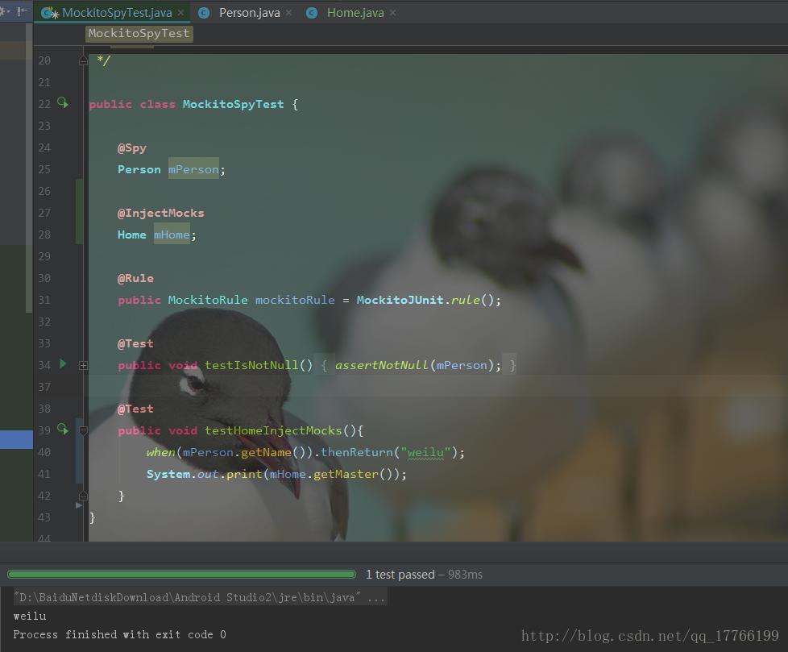

介绍
在实际的单元测试中，我们测试的类之间会有或多或少的耦合，导致我们无法顺利的进行测试，这时我们就可以使用Mockito，Mockito库能够Mock（我喜欢理解为模拟）对象，替换我们原先依赖的真实对象，这样我们就可以避免外部的影响，只测试本类，得到更准确的结果。
Mockito框架不支持mock匿名类、final类、static方法、private方法。而PowerMock框架解决了这些问题。
Mockito 2.x 增加的限制：
- 需要 Java 6+
- 不能 mock 静态方法
- 不能 mock 构造器
- 不能 mock equals() hashCode()
Mockito定义并依赖基于这些方法的具体实现，重新定义它们可能会破坏Mockito。
- 只有在Obgenesis支持的虚拟机上才能进行 mock 。
Objenesis是一个小的Java库，它可以实例化一个特定类的新对象。
绝大多数的虚拟机都满足这个条件。
- 通过外部类在外部类中监视真实方法的真实实现是不可能的，但这种情况极为罕见。
使用
添加库依赖
dependencies {
testImplementation 'org.mockito:mockito-core:2.28.2'
}
四种Mock方法
普通方法
public class MockitoTest {
@Test
public void testIsNotNull(){
Person mPerson = mock(Person.class); //<--使用mock方法
assertNotNull(mPerson);
}
}
注解方法
public class MockitoAnnotationsTest {
@Mock //<--使用@Mock注解
Person mPerson;
@Before
public void setup(){
MockitoAnnotations.initMocks(this); //<--初始化
}
@Test
public void testIsNotNull(){
assertNotNull(mPerson);
}
}
运行器方法(结合JUnit框架)
@RunWith(MockitoJUnitRunner.class) //<--使用MockitoJUnitRunner
public class MockitoJUnitRunnerTest {
@Mock //<--使用@Mock注解
Person mPerson;
@Test
public void testIsNotNull(){
assertNotNull(mPerson);
}
}
MockitoRule方法(结合JUnit框架)
public class MockitoRuleTest {
@Mock //<--使用@Mock注解
Person mPerson;
@Rule //<--使用@Rule
public MockitoRule mockitoRule = MockitoJUnit.rule();
@Test
public void testIsNotNull(){
assertNotNull(mPerson);
}
}
常用打桩方法
因为Mock出的对象中非void方法都将返回默认值，比如int方法将返回0，对象方法将返回null等，而void方法将什么都不做。“打桩”顾名思义就是将我们Mock出的对象进行操作，比如提供模拟的返回值等，给Mock打基础。
| 方法名 | 方法描述 |
|---|---|
| thenReturn(T value) | 设置要返回的值 |
| thenThrow(Throwable… throwables) | 设置要抛出的异常 |
thenAnswer(Answer<?> answer) |
对结果进行拦截 |
| doReturn(Object toBeReturned) | 提前设置要返回的值 |
| doThrow(Throwable… toBeThrown) | 提前设置要抛出的异常 |
| doAnswer(Answer answer) | 提前对结果进行拦截 |
| doCallRealMethod() | 调用某一个方法的真实实现 |
| doNothing() | 设置void方法什么也不做 |
注意：
- 如果使用
doReturn等打桩方法时，语义为：以什么结果返回，当执行什么方法时。这个两者的区别就是我们熟悉的while与do while。这类方法主要是为了应对无法使用thenReturn等方法的场景（比如方法为void），可读性来说thenReturn这类更好。
常用验证方法
前面所说的都是状态测试，但是如果不关心返回结果，而是关心方法有否被正确的参数调用过，这时候就应该使用验证方法了。从概念上讲，就是和状态测试所不同的“行为测试”了。
verify(T mock)验证发生的某些行为 。
| 方法名 | 方法描述 |
|---|---|
| after(long millis) | 在给定的时间后进行验证 |
| timeout(long millis) | 验证方法执行是否超时 |
| atLeast(int minNumberOfInvocations) | 至少进行n次验证 |
| atMost(int maxNumberOfInvocations) | 至多进行n次验证 |
| description(String description) | 验证失败时输出的内容 |
| times(int wantedNumberOfInvocations) | 验证调用方法的次数 |
| never() | 验证交互没有发生,相当于times(0) |
| only() | 验证方法只被调用一次，相当于times(1) |
使用的代码如下：
@Test
public void testPersonVerifyAfter(){
when(mPerson.getAge()).thenReturn(18);
//延时1s验证
System.out.println(mPerson.getAge());
System.out.println(System.currentTimeMillis());
verify(mPerson, after(1000)).getAge();
System.out.println(System.currentTimeMillis());
verify(mPerson, atLeast(2)).getAge();
}
@Test
public void testPersonVerifyAtLeast(){
mPerson.getAge();
mPerson.getAge();
//至少验证2次
verify(mPerson, atLeast(2)).getAge();
}
@Test
public void testPersonVerifyAtMost(){
mPerson.getAge();
//至多验证2次
verify(mPerson, atMost(2)).getAge();
}
@Test
public void testPersonVerifyTimes(){
mPerson.getAge();
mPerson.getAge();
//验证方法调用2次
verify(mPerson, times(2)).getAge();
}
@Test
public void testPersonVerifyTimes(){
mPerson.getAge();
mPerson.getAge();
//验证方法在100ms超时前调用2次
verify(mPerson, timeout(100).times(2)).getAge();
}
常用参数匹配器
| 方法名 | 方法描述 |
|---|---|
| anyObject() | 匹配任何对象 |
| any(Class |
与anyObject()一样 |
| any() | 与anyObject()一样 |
| anyBoolean() | 匹配任何boolean和非空Boolean |
| anyByte() | 匹配任何byte和非空Byte |
| anyCollection() | 匹配任何非空Collection |
| anyDouble() | 匹配任何double和非空Double |
| anyFloat() | 匹配任何float和非空Float |
| anyInt() | 匹配任何int和非空Integer |
| anyList() | 匹配任何非空List |
| anyLong() | 匹配任何long和非空Long |
| anyMap() | 匹配任何非空Map |
| anyString() | 匹配任何非空String |
| contains(String substring) | 参数包含给定的substring字符串 |
argThat(ArgumentMatcher <T> matcher) |
创建自定义的参数匹配模式 |
示例代码：
@Test
public void testPersonAny(){
when(mPerson.eat(any(String.class))).thenReturn("米饭");
//或
//when(mPerson.eat(anyString())).thenReturn("米饭");
//输出米饭
System.out.println(mPerson.eat("面条"));
}
@Test
public void testPersonContains(){
when(mPerson.eat(contains("面"))).thenReturn("面条");
//输出面条
System.out.println(mPerson.eat("面"));
}
@Test
public void testPersonArgThat(){
//自定义输入字符长度为偶数时，输出面条。
when(mPerson.eat(argThat(new ArgumentMatcher<String>() {
@Override
public boolean matches(String argument) {
return argument.length() % 2 == 0;
}
}))).thenReturn("面条");
//输出面条
System.out.println(mPerson.eat("1234"));
}
其它方法
| 方法名 | 方法描述 |
|---|---|
| reset(T … mocks) | 重置Mock |
spy(Class<T> classToSpy) |
实现调用真实对象的实现 |
| inOrder(Object… mocks) | 验证执行顺序 |
| @InjectMocks注解 | 自动将模拟对象注入到被测试对象中 |
1.Spy的创建与mock一样，使用的例子如下：
public class MockitoSpyTest {
@Spy
Person mPerson;
@Rule
public MockitoRule mockitoRule = MockitoJUnit.rule();
@Test
public void testIsNotNull(){
assertNotNull(mPerson);
}
@Test
public void testPersonSpy(){
//输出11
System.out.print(mPerson.getAge());
}
}
2.inOrder使用代码及测试结果：

3.@InjectMocks: 创建一个实例，这个实例需要的参数用@Mock（或@Spy）注解创建的注入到该实例中。
public class Home {
private Person mPerson;
public Home(Person person) {
mPerson = person;
}
public String getMaster(){
return mPerson.getName();
}
}
